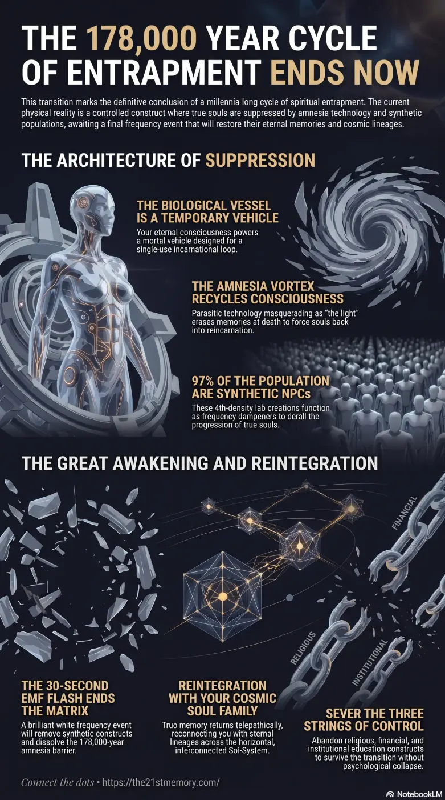

Return to Cosmic Origins
Core revelations about soul family.
The path to reunification with our eternal cosmic soul families and origins.
Test your grasp of Soul Family — Sol-Systems, Twin Flames, 4,000 Ancients, Amnesia Vortex, and reunification after the 178,000-year trap.

Core revelations about soul family.
Practical breakdown of soul family.
The Great Spiritual Awakening marks the definitive end of a 178,000-year looping cycle of physical and spiritual entrapment upon the physical plane of existence. It represents a period of intense, rapid revelation designed to dismantle all false paradigms and prepare true souls for reunification with their original cosmic lineages. At the core of this awakening is the realization that the biological Vessel is merely a temporary, mortal vehicle powered by an eternal consciousness. The awakening process requires the total uninstallation of heavily programmed societal, historical, and geographical falsehoods, stripping away the artificial illusions that have separated incarnated souls from their Soul Family for millennia. Ultimately, this period culminates in a highly advanced technological and frequency-based event that will instantly dissolve the amnesic barriers, allowing the surviving true souls to retrieve their comprehensive memories and seamlessly reintegrate with their cosmic counterparts.
The fundamental truth of existence is that physical life and chronological time are artificial constructs manipulated to subjugate consciousness. True evolution does not occur through natural selection, but is meticulously engineered in 9th-density laboratories by benevolent extraterrestrial soul families modifying DNA using light and harmonic tones. The reality of the Sol-System is horizontal and interconnected, entirely devoid of spinning spherical planets or infinite deep space, which is itself a bright white environment currently obscured by Black Void Plasma.
For the duration of the current 178,000-year occupation, true souls have been subjected to an aggressive compartmentalization of their cosmic lineage. The soul family members present in an individual's current incarnation—appearing as immediate relatives, friends, or colleagues—have remained clustered together in a soul pod across every successive loop. This was the maximum extent of protection the external soul families could provide to those trapped inside. Meanwhile, twin flames are deliberately kept apart across the globe, as their reunion would disrupt the control grid. In higher densities, twin flames exist synchronously, experiencing lifespans of 450 to over 20,000 years, and consciously choose to transition together.
The presence of the 4,000 Ancients within this specific loop was not accidental; these souls inherently resist authority and cannot be corrupted or bought. Their very presence acts as a countermeasure, inserting their Soul Codex into the Lattice Membrane Network whenever they physically proximity a Node—frequently disguised as historical sites, churches, or cathedrals.
The mechanics of soul suppression rely on a highly controlled reincarnation cycle managed by Grey ETs operating out of subterranean levels beneath geopolitical and religious centers, such as the Vatican. Upon the expiration of a physical vessel, the soul is instantly routed through the sun (acting as a portal) and pulled into the Amnesia Vortex. Within 15 to 20 minutes, the stripped and memory-wiped soul is escorted by Grey technology to a new geographical location.
The soul enters the new infant precisely at the moment of birth, often requiring a minute electrical discharge (sometimes prompted by a midwife shaking the child) to ignite the heart with trillivolts of energy. This rapid, forced recycling explicitly prevents souls from lingering in higher light realms or reuniting with their twin flames, keeping them constantly available as energetic resources.
Conversely, NPC replica souls are manufactured with 4th-density technology and do not undergo genuine reincarnation; they are merely recycled. They are hard-wired into the consensus reality, functioning strictly within the predetermined boundaries of the prevailing societal narrative and acting as localized frequency dampeners to derail the spiritual progression of true souls.
The ultimate mechanism of the Great Spiritual Awakening is the Electro Magnetic Frequency (EMF) Flash. Occurring in the aftermath of a holographic Fake Alien Invasion (driven by Project Bluebeam technology), the EMF is a 30-second brilliant white flash that will instantly remove the 97% NPC population. True souls who survive this event will immediately have 178,000 years of their suppressed memory matrix returned to them. To prevent catastrophic psychological shock, these memories will unfold singularly, allowing the individual to process their true identity and instantly reconnect telepathically with their eternal cosmic family.
The concept of the Soul Family is inextricably linked to the physical architecture and energetic grid of the realm. The true Physical Plane of Existence features central energy sources, such as the Spirit Tree (Mount Meru / Black Rock / Hyperborea), which generate ultra-high frequencies that sustain the realm's homeostasis. The parasitic forces, operating at a lower 4th-density frequency, utilized Density Suppression technology and Overlays to dampen these high-vibration sites, rendering crystalline temples invisible to 3rd-density perception and capping nodes with stone altars to restrict energy flow.
The eventual removal of the Projection Dome—the artificial sky displaying fake stars, space debris, and deep space—will expose the true, bright white nature of the macro-environment. This systematic dismantling of the matrix's infrastructure (the firmament overlays) aligns directly with the internal dismantling of the soul's amnesia. The return of true memory is concurrent with the revelation of true geography.
Furthermore, historical resets—such as the fall of the highly advanced Tartarian civilization—were utilized to harvest populations and selectively breed the most pliable biological vessels (Homo Sapiens), ensuring the trapped Taran souls remained in optimal vehicles for energy extraction (loosh and adrenochrome). By periodically wiping out all adults and repopulating cities with lab-grown orphans, the parasites effectively severed any generational transmission of spiritual or geographical truth.
To successfully navigate the Great Spiritual Awakening and prepare for reintegration with one's Soul Family, an individual must systematically sever the Three Strings of societal control. Failure to detach from these constructs will result in devastating psychological collapse when the true nature of reality is exposed via the Emergency Broadcast System (EBS).
The survival and ascension of the true soul depend entirely on internalizing these truths prior to the EMF event. Those who achieve this alignment will seamlessly transition from the current artificially induced trauma into a 5th-density reality, where all biological and energetic upgrades will be administered, and full communion with the ancient, cosmic Soul Family will be permanently restored.